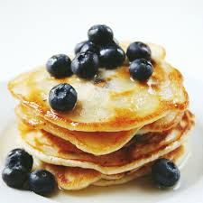
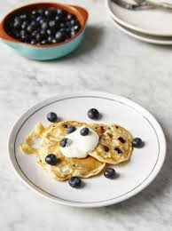
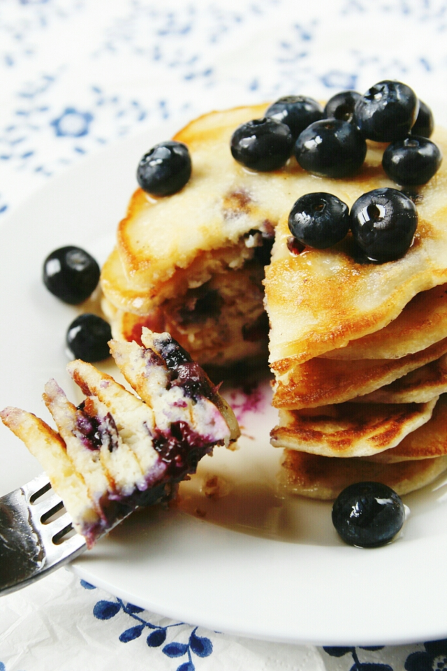

One-cup pancakes with blueberries
Directions:
- Crack the egg into a large mixing bowl, add the flour, milk and a tiny pinch of sea salt.
- Whisk everything together until you have a lovely smooth batter, then fold through the blueberries.
- Heat ½ a tablespoon of olive oil in a large non-stick frying pan over a medium heat, carefully tilting the pan to spread the oil out evenly.
- Add a few ladles of batter to the pan, leaving space between each one so they have room to spread out slightly – each ladleful will make one pancake, and you’ll need to work in batches.
- Cook for 1 to 2 minutes, or until little bubbles appear on the surface and the bases are golden, then carefully flip them over.
- When the pancakes are golden on both sides, remove to a plate.
- Repeat with the remaining batter, adding a little more oil to the pan between batches, if needed.
- Serve the pancakes while they’re still hot, with a dollop of yoghurt and some extra fresh berries, if you like.
Ingredients:
- 1 large free-range egg
- 1 cup of self-raising flour
- 200 g blueberries
- olive oil
- 4 tablespoons natural yoghurt



What I learned
- all you need is a cup or a mug
- use the same cup for measuring both the flour and the milk
- simplest pancakes to make